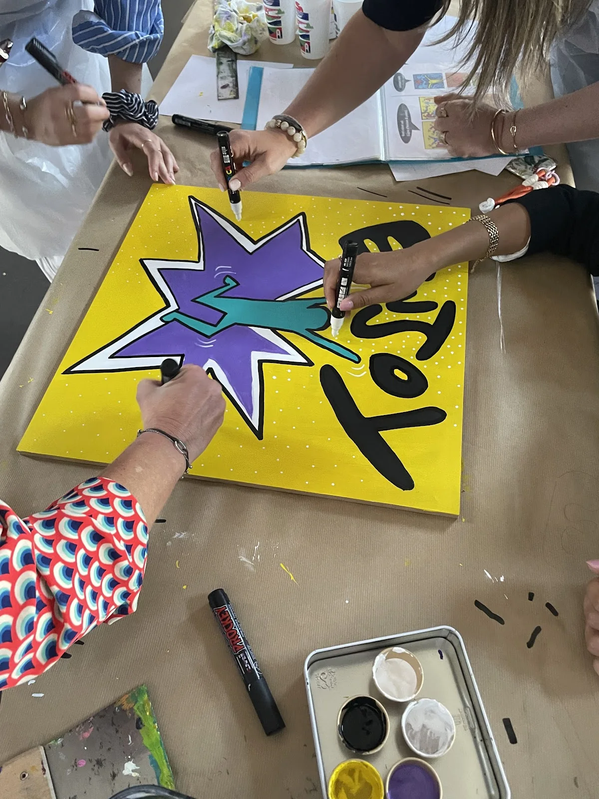

Accompagner le changement
Créer un cadre d’échange qui aide les collaborateurs à se projeter, à exprimer les besoins et à retrouver un climat de confiance.
Nathalie associe sa pratique artistique à une approche de coaching d’équipe pour accompagner les collectifs qui souhaitent aller plus loin que l’animation ponctuelle.


Le coaching d’équipe peut compléter l’expérience artistique en amont pour aider le collectif à clarifier ses enjeux, partager une vision et faire émerger des actions.
Créer un cadre d’échange qui aide les collaborateurs à se projeter, à exprimer les besoins et à retrouver un climat de confiance.
Travailler sur un socle commun, des valeurs, des priorités ou une vision partagée avant de les traduire dans un projet concret.
Utiliser des outils créatifs pour sortir des habitudes, croiser les points de vue et faire émerger des pistes d’action.
L’art permet de rendre visibles les contributions de chacun et de transformer des notions parfois abstraites en expérience vécue.
“Accompagné on va plus vite, ensemble on va plus loin.”
Une approche de l’équipe par l’échange, la créativité et le sens.